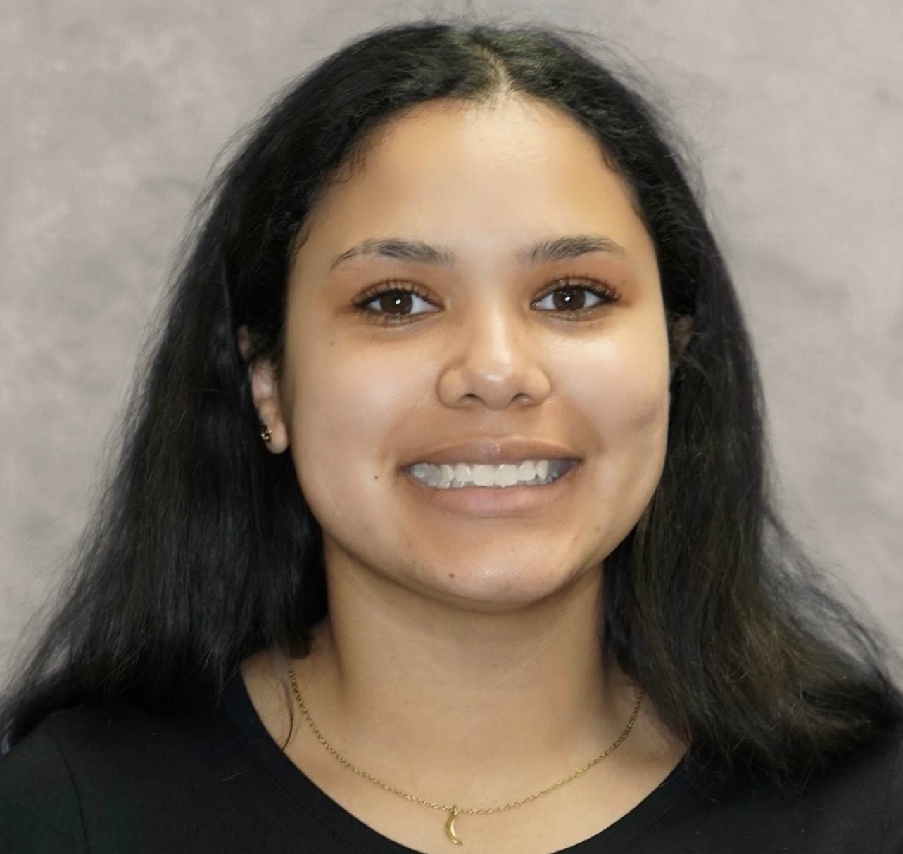

Jada Bostic

Summary
Detail-oriented IT Support Specialist with hands-on experience troubleshooting hardware, software, and network issues in fast-paced work environments. Skilled in Windows systems, device setup, user support, and problem resolution with a strong focus on reliability and clear communication. Continuously building technical expertise through certifications and coursework, with a passion for learning, improving systems, and supporting users effectively.
Education
- High School Diploma - Catawba Valley East Campus - Graduated 2020
- Information Technology Certificate - FullSail University - Graduated 2024
Work Experience
- Black Locust Lumber - Administrative Assistant: 2018-2021
- Assist bookkeeper with office administrative needs such as filing, data entry, planning, phone calls, scanning, printing, organizing, housekeeping, inventory, and special tasks.
- Library Assistant - Catawba Valley Community College: 2021-2022
- Data entry, assisting staff with needs, assisting patrons when needed, technology support, registering patrons, cataloging, shelving books, shifting books, inventory on books, filing, scanning, printing, special task, planning, answering phone calls, and general housekeeping.
- Information Technology Specialist - Design Foundry: 2025-Present
- As an IT Support Specialist at Design Foundry, I provide hands-on technical support, system maintenance, and troubleshooting for a high-volume manufacturing environment that supplies Crate & Barrel. My role involves diagnosing and resolving hardware, software, and network issues across multiple departments to ensure smooth daily operations for warehouse, office, and production teams.As an IT Support Specialist at Design Foundry, I provide hands-on technical support, system maintenance, and troubleshooting for a high-volume manufacturing environment that supplies Crate & Barrel. My role involves diagnosing and resolving hardware, software, and network issues across multiple departments to ensure smooth daily operations for warehouse, office, and production teams.
Skills
- Technical Support and Troubleshooting
- Hardware and Software Installation
- Network Configuration and Maintenance
- Operating Systems: Windows, macOS, Linux
- Customer Service and Communication
- Problem-Solving and Critical Thinking
- Time Management and Multitasking
- Documentation and Reporting
Awards and Certifications
- Project Management Foundations: Quality(2014)
- Phi Theta Kappa Academic Honor Society (2022)
Other Information